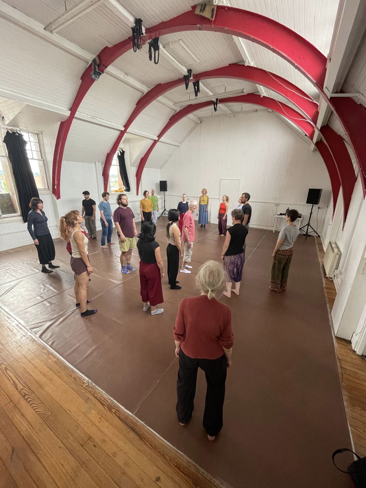

TANGO

Since 2002 teaching and researching in tango technique, from somatic, musicality, dynamics. Sharing my vision of dancing tango from a simple and pleasant way of going through it, trying to get you to your own dance as a starting point to share it with another person in an embrace. Also teaching and sharing classes of Milonga and Vals, with their technique and particularities. Very beautiful rhythms to learn and deepen.